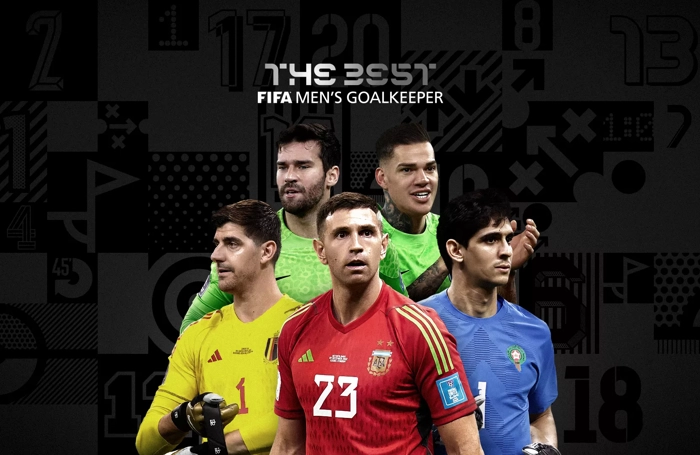

The Best FIFA Men's Goalkeeper: Nominees in focus

* Five players nominated for The Best Men's Goalkeeper prize
* Winner will be announced at ceremony on 27 February
* Chelsea and Senegal keeper Edouard Mendy won the award last year